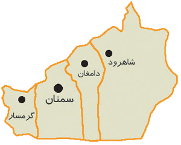

در زمان کمبوجیه سمنان مانند پلی سه ایالت ری و خراسان و استرآباد را به هم وصل می کرد. در دوره های بعدی نیز
منطقه سمنان مورد توجه خاص حکومت های مرکزی قرار گرفت و مناقشه های متعدد بر سراین منطقه بین قدرتمندان در گرفت
اشکانیان هم ایران را به هجده ایالت تقسیم کرده بودند که یکی از آنها کمیس یا قومس در نواحی سمنان و دامغان بود.
از زمان سلسله طاهریان تا غزنویان نیز سمنان اهمیت خود را حفظ کرد و ازجمله مناطقی بود که شاهد انبوه کشمکشها بود
یکی از حکام معروف ایالت کومش در زمان غزنویان امیر اجل بختیار بنمحمد معروف به ابوحرب بختیار بود که بانی منار
مسجد جامع سمنان و بقعه پیر علمدار کرمان بود. سمنان در دوران مغول همچون سایر نقاط ایران از حملات در امان نمان
د و متحمل خسارات فراوان شد